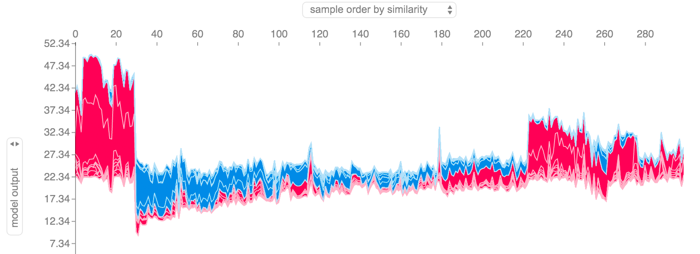

Overview
Purpose
I would like to take some time talking about SHAP. For my senior project and for work I've had to use python's library shap to explain my random forest model. According to the creators of SHAP stands for SHapley Additive exPlanations. SHAP is a game-theoretic approach to explain the output of any machine learning model. It connects optimal credit allocation with local explanations using the classic Shapley values from game theory and their related extensions. (GitHub Link)
When I read that it was a lot to take in but in plain words SHAP helps us and in my case helped me interpret my machine learning model with Shapley values. I want to take the time to show you how I used SHAP to explain my model. If you want to go more in depth about Game Theory & Shapley I suggest visiting Analytics Vidhya I'm just going to give a high overview on how to use this library.
Code
Here I'm going to share an example of how to use SHAP.